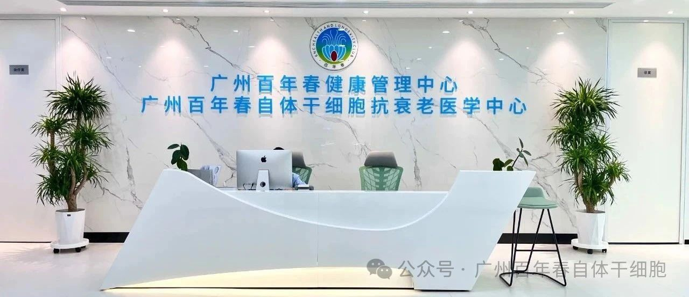
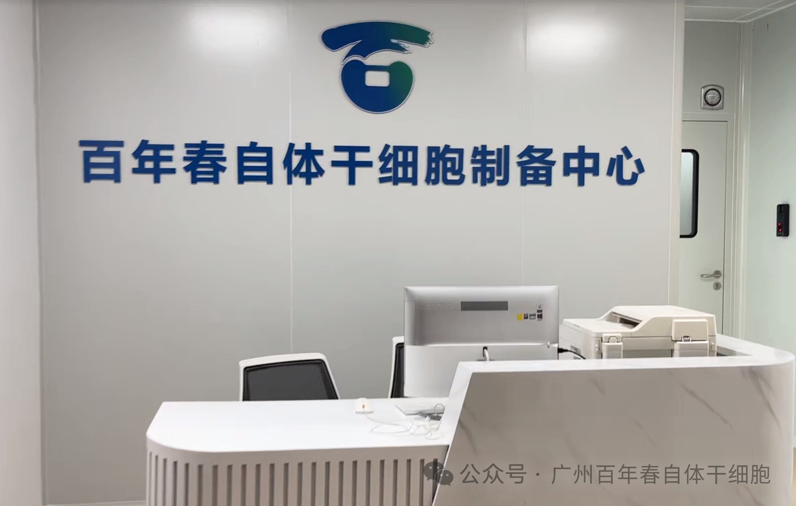

.
2024年12月8日，中国科学院深圳先进技术研究院与百年春集团核心公司共建“创新联合体团队”，为世界领先的百年春干细胞技术在应用领域给予保驾护航。
通俗地讲，父母的精子和卵子结合创造受精卵、胚胎和新生儿，创造了我们每个人的生命。自体干细胞是父母亲赠送给我们每个人的器官种子细胞，让我们的身体器官继续生长发育成熟，自体干细胞更是父母亲赠送给我们每个人的生命能源细胞，这些重要的生命能源细胞，让我们每个人的生命过程更加精彩纷呈
遗传性自体干细胞的遗传性
父母亲赠送给我们的自体干细胞，它们终身留在了我们的身体里，留在了我们的所有器官和组织里。自体干细胞作为生命的能源细胞，主导和调控着我们每个人生命的生长、发育、成熟、生命功能、生命内容、性能力、生育能力、生命繁延生命修复、生命防卫、生命过程和寿命长度，是每个人生命的最重要的生命物质
生命功能表演的消耗性
这种源自于父母亲赠送的生命能源细胞---自体干细胞，在演绎每个人的生命功能和生命过程时，逐步地、慢慢地消耗掉了自己，燃烧掉了自己,每个人自己的自体干细胞耗竭的时候，也就是每个人生命和寿命正常结束的时候。每个人的自体干细胞有一次性遗传获得(父母亲赠予)消耗性和耗竭性的生物学特点
06:0
我们身体里有很多种自体干细胞例如，我们生命中的第1能源细胞---自体造血干细胞、第2能源细胞---自体间充质干细胞、第3能源细胞---自体生殖干细胞， 还有很多器官干细胞， 例如: 自体神经干细胞、自体胰腺千细胞、自体视网膜干细胞、自体肝脏千细胞、自体肺脏千细胞、自体肾脏千细胞，它们是我们每个人重要的器官能源细胞。
百年春品牌自体干细胞优势
技术优势
血源性自体干细胞生产技术，通过最先进的分子生物学技术和细胞生长调控技术进行处理和培养，利用血液中的单个核细胞，在6-14天时间内使之逆转化重新生成为有定向或多向分化功能十余种不同种类的数亿的自体干细胞。
独创将体细胞通过专利技术逆向诱导成自体干细胞，无转基因，无病毒载体;
定向为客户私人定制共10余种不同种类的自体干细胞，满足不同需求;
规模化生产，用100-200ML血液在７-11天一次性生产上亿级原代自体干细胞;
产品优势
干细胞治疗，并不是随意的一种干细胞都能治疗任何的疾病，不同疾病需要使用不同类型干细胞，甚至是多种干细胞的组合应用。
百年干细胞的自体干细胞产品涵盖自体造血干细胞、男性自体生殖干细胞、女性自体生殖干细胞、自体神经干细胞、自体视网膜干细胞、自体胰腺干细胞、自体肝脏干细胞、自体肺干细胞、自体肾脏干细胞、自体间充质干细胞等10余种自体干细胞。
个性化定制优势
百年干细胞根据客户不同的年龄，不同的性别，不同的健康情况，不同的健康要求，特别推出有自体干细胞定制服务由专家为您量身定制您自己的干细胞服务方案。
血源性自体干细胞生产专利技术实现每个人(尤其是成年人)，无论在他/她生命过程中的任何阶段和任何时期，都始终有机会生产和使用自己个人的自体干细胞，使自体干细胞在自身的疾病修复、抗衰老保健和体外生产自体组织器官等领域的应用中，具有真正的现实意义。
百年春自体干细胞的安全性
所有百年春自体干细胞均按照国家相关标准，以临床级干细胞制剂质量控制标准来生产，经过严格的安全性检测，包括无菌检测、残留物分析，干细胞周期和倍体分析，细胞核型分析，干细胞表型鉴定，细胞功能学鉴定和裸鼠成瘤试验等多项检测。百年春自体干细胞技术自 2000 年研发成功使用至今，与干细胞保健移植术相关的继发性细菌/病毒感染率为零，传染病感染率为零，传染病交叉感染率为零，继发性肿瘤发生率为零，死亡率为零
百年春干细胞的作用
可以治疗传统医学可治或不可治疗的两百多种疾病。包括:帕金森、阿尔兹海默症、脑中风后遗症、甲状腺疾病、冠心病、高血压病、高血脂症、糖尿病、慢性肾炎、肝硬化、喘息性气管炎、红斑狼疮、银屑病、关节炎、关节退行性变.
二、可以保健，抗衰老。
1、改善机体的衰老基因，使衰老基因减少;抗衰老基因、DNA修复基因、长寿基因和抑制癌症基因增强。
2、可以延长细胞染色体端粒的长度，从而达到延长寿命和相对冻龄。
3、动物(小白鼠)实验证明:长期、定期使用自体干细胞，可以平均延长30%，最长延长4.6倍的寿命。
三、存钱--储蓄银行 存生命的种子(自体干细胞)--生命银行人们可以在年轻时，或者身体机能好的情况下，事先储存自己的自体干细胞，以防未来疾病或意外伤害(如:创伤、烧伤、核辐射伤害等)降临时，能在细胞库的液氮罐里及时得到自己的干细胞。
四、自体干细胞可以作为我们未来器官再生再造的精准生物学材料。
广州百年春自体干细胞再生科技馆环境

